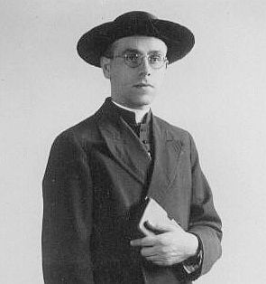

I sacerdoti di Quercegrossa
Nella secolare storia della nostra piccola parrocchia di campagna si rammentano soltanto due casi di nostri compaesani ascesi al sacro ministero del sacerdozio.
Due preti: uno nell’Ottocento, della famiglia Ticci, e il secondo nel Novecento della famiglia Mori. In questa pagina espongo brevemente la loro biografia e alcuni aspetti salienti della loro missione.
Don Celso Ticci nacque a Quercegrossa il 1 aprile 1824 da Antonio e Agnese Lamioni. Entrato giovinetto in seminario a Siena percorse tutti i gradi fino all’ordinazione con la Tonsura ricevuta il 22 marzo 1840 e la consacrazione avvenuta il 9 aprile 1848. Nei primi anni assunse la titolarità della Cappellania di S. Domenico in Quercegrossa della famiglia Nencini e, stante la sua condizione di agiato, si limitò ad assumere piccoli incarichi dando una mano anche a Quercegrossa al parroco don Pratesi. Col passare degli anni cercò una sistemazione come parroco raccomandandosi ai Piccolomini patroni della Chiesa di Basciano nel 1862 per la nomina in quella parrocchia, ma senza risultati e nel 1877 celebrò nella Chiesa di Lornano come economo. Ottenne invece, molto più tardi, il 17 agosto 1880 all’età di 56 anni vincendo il concorso come unico concorrente, la parrocchia di S. Lorenzo a Sovicille dove era economo spirituale dal 1878. In questo popolo visse e morì.
Don Luigi Mori nacque il 16 ottobre 1913 nel podere di Vignale, parrocchia di S. Leonino, diocesi di Colle di Val d’Elsa, da Raffaello e Annunziata Fontani.

Trasferitosi a Quercegrossa nel 1919, entra in seminario sedicenne nel 1929. Dopo la morte dei genitori si trasferisce a Roma nel 1935, al Collegio Capranica, dove affronta gli studi di filosofia e teologia. Il 26 ottobre 1937 riceve la Tonsura a Siena e il 23 marzo 1940 è ordinato sacerdote in S. Giovanni in Laterano. Il 31 marzo successivo celebra la prima messa a Quercegrossa e il 7 giugno 1940 consegue la licenza di Teologia presso l’Università Gregoriana, perfezionata con il dottorato del 5 febbraio 1946. Nel frattempo era stato nominato economo spirituale della lontana parrocchia del “Santo” a Petriolo, ma la sua vocazione lo condurrà a percorrere altre strade e non sarà mai titolare di nessuna parrocchia. Infatti, fin dal 1944 gli vengono assegnati quegli incarichi che segneranno per sempre il suo impegno nella Chiesa di Siena. Incomincia da subito a manifestare la sua sensibilità e il suo interesse alla problematica delle chiese separate e nel 1944 assume la direzione dell’ufficio diocesano per l’Ecumenismo. L’altro settore nel mondo della cultura al quale dedicherà le migliori energie è l’assistenza agli studenti universitari, soprattutto ai fuori sede, e nel 1946 è nominato assistente della FUCI nonchè padre spirituale al Seminario. Nel 1948 è animatore della peregrinatio della Madonna di Fatima in tutte le parrocchie della diocesi. Negli anni Cinquanta assume cariche in Pax Christi e diviene insegnante di teologia al seminario di Siena. E’ chiamato a dare una mano un po’ dappertutto e in un incessante lavoro organizzativo collabora col CIF, coll’UCI, coll’ACOS ecc. L’11 dicembre 1955 è nominato canonico teologo onorario della cattedrale su proposta dell’arcivescovo Toccabelli, il quale apprezza il suo fruttuoso operato. Succesivamente gli viene conferito la direzione del tribunale ecclesiastico, e gestirà la delicata problematica degli annullamenti matrimoniali con scrupolo e coscienza. Tanti altri incarichi furono svolti da don Luigi tra i quali si ricordano le marce della fede, promosse negli anni Sessanta, con una lunga processioni di studenti di passaggio da Quercegrossa. Ma tutte queste cariche e impegni non riescono a dar rilievo all’aspetto preponderante della presenza di don Luigi in famiglia e nella Chiesa, perchè fu nella mitezza d’animo, nella carità praticata, nell’assistenza ai bisognosi, nella fedeltà al sacerdozio, nella disponibilità, nelle lunghe ore trascorse dentro i confessionali e nella paziente sopportazione del male che lo tormentò negli ultimi anni che rifulse la sua grande fede.
Don Luigi morì il 30 novembre 1997 all’ospedale di Siena e venne sepolto nel cimitero di Quercegrossa. Era vissuto 84 anni. Nel decennale della sua morte, su iniziativa dell’amico diacono Renato Rossi e a cura della Fondazione Mons. Donati, è stata pubblicata una pregevole opera biografica e testimoniale su don Mori.
Paragrafo successivo
Il complesso parrocchiale
Inizio pagina
Vai all'Indice dei Capitoli